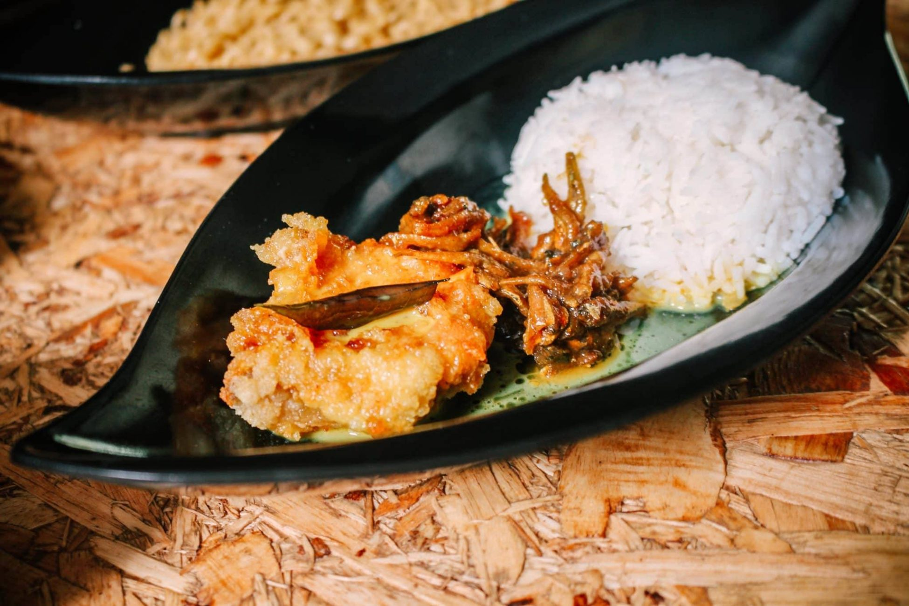

Nasi Katok
Ingredients
- 1 cup jasmine rice (or any white rice). I prefer sticky rice.
- 1 ½ cups water
- Salt
- Chicken
- 1 tsp turmeric powder
- Oil for frying
- 5 red chilies (or fewer if you want it mild)
- 2 cloves garlic
- 2 shallots (or ½ small onion)
- 1 tsp sugar
- Optional: a squeeze of lime
Instructions
- Cook the ric: Rinse rice and cook it with water using a rice cooker or stovetop.
Fluff and set aside once done.
- Marinate and fry the chicken: Rub chicken with turmeric and salt.
Let sit for 10–15 minutes while the oil heats up.
Deep fry or shallow fry until golden brown and cooked through (about 10–15 minutes depending on size).
- Make the sambal: Blend or grind chilies, garlic, and shallots into a rough paste.
Heat oil in a pan, sauté the paste until fragrant (about 5 minutes).
Add sugar, salt, and water. Stir and simmer for 2–3 minutes.
Taste and adjust—add lime for extra zing if you like.
- Assemble your Nasi Katok: Scoop rice onto a plate.
Add your fried chicken. Spoon sambal on the side (or more if you like it spicy!).

Enjoy :)